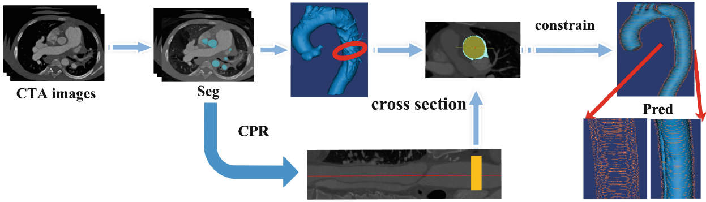
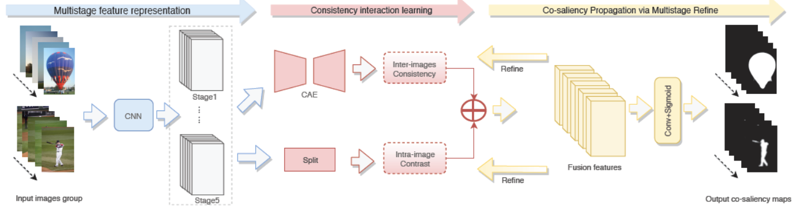

In Press
Accurate 3D Contrast-Free Myocardial Infarction Delineation Using a 4D Dual-Stream Spatiotemporal Feature Learning Framework.
Applied Soft Computing
[paper]
Multi-domain Adversarial Variational Bayesian Inference for Domain Generalization.
IEEE Transactions on Circuits and Systems for Video Technology
[paper]
A Physics-guided Deep Learning Approach For Functional Assessment of Cardiovascular Disease in IoT-based Smart Health.
IEEE Internet of Things Journal
[paper]
Scale Mutualized Perception for Vessel Border Detection in Intravascular Ultrasound Images.
IEEE/ACM Transactions on Computational Biology and Bioinformatics
[paper]
Publication
Conditional Physics-Informed Graph Neural Network for Fractional Flow Reserve Assessment.
26nd International Conference on Medical Image Computing and Computer Assisted Intervention
(MICCAI), 2023. [paper]
Gradient and Feature Conformity-Steered Medical Image Classification with Noisy Labels.
26nd International Conference on Medical Image Computing and Computer Assisted Intervention
(MICCAI), 2023. [paper]
Multi-Level Multi-Type Self-Generated Knowledge Fusion for Cardiac Ultrasound Segmentation.
Information Fusion
92: 1-12, 2023 [paper]

Multi-View Stereoscopic Attention Network for 3D Tumor Classification in Automated Breast Ultrasound.
Expert Systems with Applications
234(120969), 2023. [paper]

Vessel Contour Detection in Intracoronary Images via Bilateral Cross-Domain Adaptation.
IEEE Journal of Biomedical and Health Informatics
27(7): 3314-3325, 2023. [paper]
Causal Knowledge Fusion for 3D Cross-Modality Cardiac Image Segmentation.
Information Fusion
99(101864), 2023. [paper]
Hierarchical Perception Adversarial Learning Framework for Compressed Sensing MRI.
IEEE Transactions on Medical Imaging
42(6): 1859-1874, 2023. [paper]
Progressive Perception Learning for Main Coronary Segmentation in X-ray Angiography.
IEEE Transactions on Medical Imaging
42(3): 864-879, 2023. [paper]
Reliable Mutual Distillation for Medical Image Segmentation Under Imperfect Annotations.
IEEE Transactions on Medical Imaging
42(6): 1720-1734, 2023. [paper]
Survival Prediction of Heart Failure Patients Using Motion-Based Analysis Method.
Computer Methods and Programs in Biomedicine
236(107547), 2023. [paper]
Motion Estimation Based on Projective Information Disentanglement for 3D Reconstruction of Rotational Coronary Angiography.
Computers in Biology and Medicine
157(106743), 2023. [paper]
Distance transform learning for structural and functional analysis of coronary artery from dual-view angiography.
Future Generation Computer Systems
145:136-149, 2023. [paper]
Multiple Adversarial Learning based Angiography Reconstruction for Ultra-low-dose Contrast Medium CT.
IEEE Journal of Biomedical and Health Informatics
27(1): 409-420, 2023. [paper]
Intelligent Internet of Things in Mammography Screening using Multicenter Transformation Between Unified Capsules.
IEEE Internet of Things Journal
10(2): 1536-1545, 2023. [paper]
Personalized Coronary Blood Flow Model Based on CT Perfusion to Non-Invasively Calculate Fractional Flow Reserve.
Computer Methods in Applied Mechanics and Engineering
404(1), 115789, 2023. [paper]
Unsupervised Tissue Segmentation via Deep Constrained Gaussian Network.
IEEE Transactions on Medical Imaging
41(12): 3799-3811, 2022. [paper]
Annealing Genetic GAN for Imbalanced Web Data Learning.
IEEE Transactions on Multimedia
24: 1164-1174, 2022. [paper]

Physiologically Personalized Coronary Blood Flow Model to Improve the Estimation of Noninvasive Fractional Flow Reserve.
Medical Physics
49(1): 583-597, 2022. [paper]

Vessel-GAN: Angiographic Reconstructions from Myocardial CT Perfusion with Explainable Generative Adversarial Networks.
Future Generation Computer Systems
130: 128-139, 2022. [paper]

A Geometry-Constrainted Deformable Attention Network for Aortic Segmentation.
25nd International Conference on Medical Image Computing and Computer Assisted Intervention
(MICCAI), 2022. [paper]
Discrepancy and Gradient-guided Multi-modal Knowledge Distillation for Pathological Glioma Grading.
25nd International Conference on Medical Image Computing and Computer Assisted Intervention
(MICCAI), 2022. [paper]

CS2: A Controllable and Simultaneous Synthesizer of Images and Annotations with Minimal Human Intervention.
25nd International Conference on Medical Image Computing and Computer Assisted Intervention
(MICCAI), 2022. [paper]
Swin Deformable Attention U-Net Transformer (SDAUT) for Explainable Fast MRI.
25nd International Conference on Medical Image Computing and Computer Assisted Intervention
(MICCAI), 2022. [paper]
Multi-Level Semantic Adaptation for Few-Shot Segmentation on Cardiac Image Sequences.
Medical Image Analysis
73(102170), 2021. [paper]
Applying Cross-Modality Data Processing for Infarction Learning in Medical Internet of Things.
IEEE Internet of Things Journal
8(23): 16902-16910, 2021. [paper]
Joint Segmentation and Quantification of Main Coronary Vessels Using Dual-Branch Multi-scale Attention Network.
24nd International Conference on Medical Image Computing and Computer Assisted Intervention
(MICCAI), 2021. [paper]
Multi-Task Learning for Estimating Multi-Type Cardiac Indices in MRI and CT Based on Adversarial Reverse Mapping.
IEEE Transactions on Neural Networks and Learning Systems
32(2):493-506, 2021. [paper]
Video salient object detection using dual-stream spatiotemporal attention.
Applied Soft Computing
108(107433), 2021. [paper]
Industrial Pervasive Edge Computing-based Intelligence IoT for Surveillance Saliency Detection.
IEEE Transactions on Industrial Informatics
17(7): 5012-5020, 2021. [paper]
Carotid Wall Longitudinal Motion in Ultrasound Imaging: An Expert Consensus Review.
Ultrasound in Medicine and Biology
46(10):2605-2624, 2020. [paper]
Privileged Modality Distillation for Vessel Border Detection in Intracoronary Imaging.
IEEE Transactions on Medical Imaging
39(5):1524-1534, 2020. [paper]
Learning Physical Properties in Complex Visual Scenes: An Intelligent Machine for Perceiving Blood Flow Dynamics from Static CT Angiography Imaging.
Neural Networks
123:82-93, 2020. [paper]
Salient Object Detection in the Distributed Cloud-Edge Intelligent Network.
IEEE Network
34(2):216-224, 2020. [paper]

Trustful Internet of Surveillance Things Based on Deeply-Represented Visual Co-Saliency Detection.
IEEE Internet of Things Journal
7(5):4092-4100, 2020. [paper]

Simultaneous Left Atrium Anatomy and Scar Segmentations via Deep Learning in Multiview Information with Attention.
Future Generation Computer Systems
107:215-228, 2020. [paper]

IoT-based 3D Convolution for Video Salient Object Detection.
Neural Computing and Applications
32:735-746, 2020. [paper]
Unified Model for Interpreting Multi-View Echocardiographic Sequences Without Temporal Information.
Applied Soft Computing
88(106049), 2020. [paper]
Learning the Implicit Strain Reconstruction in Ultrasound Elastography Using Privileged Information.
Medical Image Analysis
58(101534), 2019. [paper]
Deep Learning for Diagnosis of Chronic Myocardial Infarction on Nonenhanced Cardiac Cine MRI.
Radiology
291:606-617, 2019. [paper]
Evaluation of Fractional Flow Reserve in Patients with Stable Angina: Can CT Compete with Angiography ?
European Radiology
29:3669-3677, 2019. [paper]
Automatic Segmentation of Coronary Tree in CT Angiography Images
International Journal of Adaptive Control and Signal Processing
33(8):1239-1247, 2019. [paper]
Context-Aware Inductive Bias Learning for Vessel Border Detection in Multi-modal Intracoronary Imaging.
22nd International Conference on Medical Image Computing and Computer Assisted Intervention
(MICCAI), 2019. [paper]

A Deep Learning Based Left Atrium Anatomy Segmentation and Scar Delineation in 3D Late Gadolinium Enhanced CMR Images.
International Society for Magnetic Resonance in Medicine Annual Meeting & Exhibition
(ISMRM), 2019. [abstract]

Motion Tracking of the Carotid Artery Wall from Ultrasound Image Sequences: a Nonlinear State-Space Approach.
IEEE Transactions on Medical Imaging
37(1):273-283, 2018. [paper]
Robust Segmentation of Intima-Media Borders with Different Morphologies and Dynamics During the Cardiac Cycle.
IEEE Journal of Biomedical and Health Informatics
22(5):1571-1582, 2018. [paper]
Robust recovery of myocardial kinematics using dual H∞ criteria.
Multimedia Tools and Applications
77:23043–23071, 2018. [paper]

Direct Delineation of Myocardial Infarction without Contrast Agents Using a Joint Motion Feature Learning Architecture.
Medical Image Analysis
50:82-94, 2018. [paper]

A Meshfree Representation for Cardiac Medical Image Computing.
IEEE Journal of Translational Engineering in Health and Medicine
6:1800212, 2018. [paper]
Holistic and Deep Feature Pyramids for Saliency Detection.
British Machine Vision Conference
(BMVC), 2018. [paper]

Deep Learning Intra-Image and Inter-Images Features for Co-Saliency Detection.
British Machine Vision Conference
(BMVC), 2018. [paper]
Direct Reconstruction of Ultrasound Elastography Using an End-to-End Deep Neural Network.
21nd International Conference on Medical Image Computing and Computer Assisted Intervention
(MICCAI), 2018. [paper]
Multiview Two-Task Recursive Attention Model for Left Atrium and Atrial Scars Segmentation.
21nd International Conference on Medical Image Computing and Computer Assisted Intervention
(MICCAI), 2018. [paper]
Multiview Sequential Learning and Dilated Residual Learning for a Fully Automatic Delineation of the Left Atrium and Pulmonary Veins from Late Gadolinium-Enhanced Cardiac MRI Images.
40th Annual International Conference of the IEEE Engineering in Medicine and Biology Society
(EMBC), 2018. [paper]
Robust Estimation of Carotid Artery Wall Motion Using the Elasticity-Based State-Space Approach.
Medical Image Analysis
37:1-21, 2017. [paper]

An Artificial Neural Network Method for Lumen and Media-Adventitia Border Detection in IVUS.
Computerized Medical Imaging and Graphics
57(4):29-39, 2017. [paper]
Direct Detection of Pixel-Level Myocardial Infarction Areas via a Deep-Learning Algorithm.
20th International Conference on Medical Image Computing and Computer Assisted Intervention
(MICCAI), 2017. [paper]
Detection of Lumen and Media-Adventitia Borders in IVUS Images Using Sparse Auto-Encoder Neural Network.
14th IEEE International Symposium on Biomedical Imaging
(ISBI), 2017. [paper]
Carotid Artery Wall Motion Estimated from Ultrasound Imaging Sequences Using a Nonlinear State Space Approach.
19nd International Conference on Medical Image Computing and Computer Assisted Intervention
(MICCAI), 2016. [paper]
Functional Assessment of the Stenotic Carotid Artery by CFD-Based Pressure Gradient Evaluation.
American Journal of Physiology - Heart and Circulatory Physiology
311(3):H645-H653, 2016. [paper]
Three-Dimensional Hemodynamics Analysis of the Circle of Willis in the Patient-Specific Non-Integral Arterial Structures.
Biomechanics and Modeling in Mechanobiology
37(1):273-283, 2016. [paper]
Motion Estimation of Common Carotid Artery Wall Using a H∞ Filter Based Block Matching Method.
18th International Conference on Medical Image Computing and Computer Assisted Intervention
(MICCAI), 2015. [paper]

An Automated Framework for Detecting Lumen and Media-Adventitia Borders in Intravascular Ultrasound Imagesd.
Ultrasound in Medicine & Biologyn
37(1):273-283, 2015. [paper]